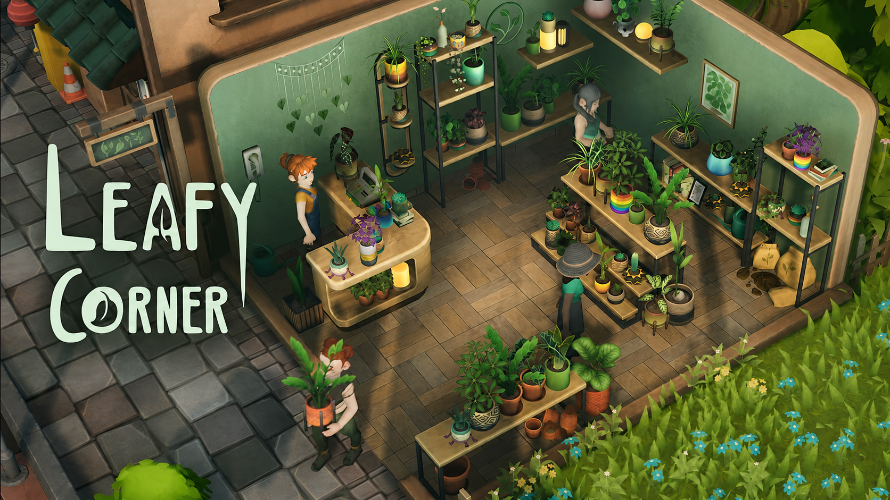
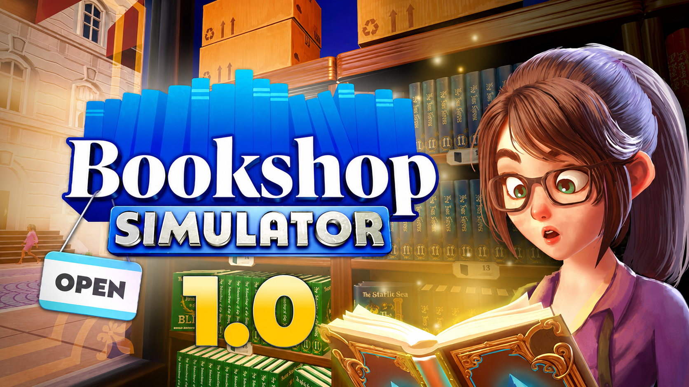
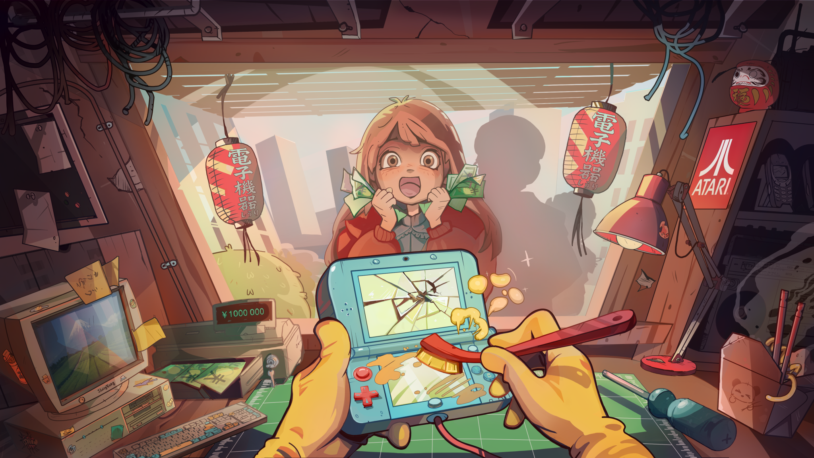

NioCZ komunitní překlady
Hry bez jazykové bariéry.
České komunitní překlady pro PC hry.
Překlady, návody na instalaci a aktualizace na jednom místě.
Prohlédnout překlady3Dostupné překlady
1 003Přeložených řádků
3Podporované hry
Dostupné překlady
Hrajte česky.
Aktuální komunitní překlady připravené ke stažení.


Co je nového
Novinky
Nové češtiny a poslední aktualizace na jednom místě.
Přehled vydání
Nové / aktualizované hry
Rozhoduje komunita
O jaký překlad máte zájem?
Dejte hlas hře, kterou byste si nejraději zahráli v češtině.
Načítám nejžádanější překlady…
O projektu
Překlady tvořené pro hráče.
NioCZ je komunitní projekt zaměřený na české překlady PC her. Cílem je zpřístupnit zajímavé hry hráčům, kterým v nich čeština chybí.
Každý překlad průběžně kontrolujeme a aktualizujeme podle možností projektu.
Kontakt
Našli jste chybu v překladu?
Dejte nám vědět. Zpětná vazba pomáhá překlady postupně zlepšovat.
Napsat zprávunioczpreklady@gmail.com